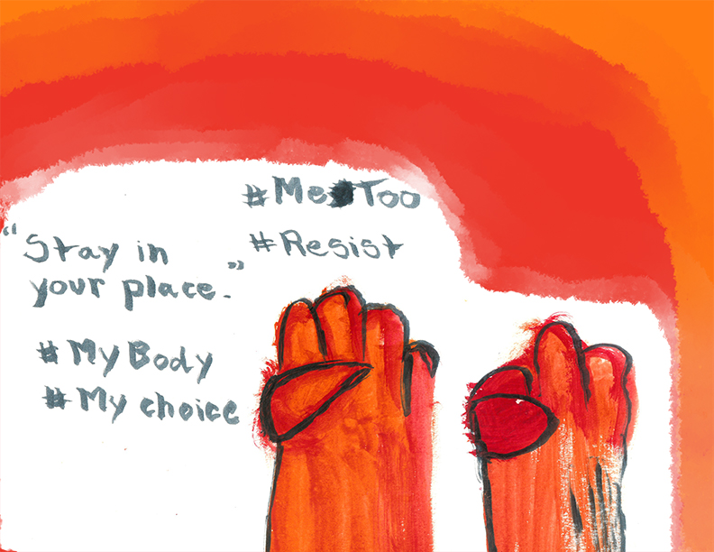

THINGS TO TAKE NOTE OF


Lesson 3

Even though it may seem intimidating to speak up, it's extremely important to get your voice heard.
Whether it's through speaking up for a cause you're passionate about, or simply voting, it's important to take a stand on something.
If you don't take a stand on something, your voice probably won't be considered important.